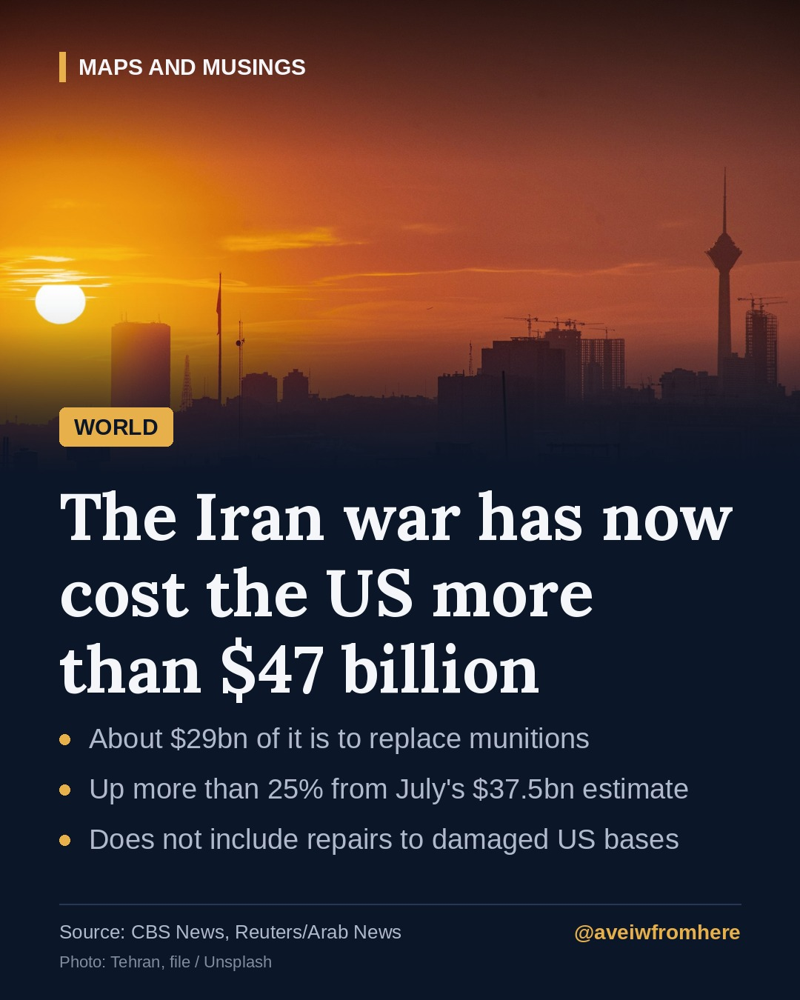

The Iran war has now cost the US more than $47 billion. Where is the money going?
A new Pentagon estimate puts the cost of America's war with Iran at more than $47 billion, a quarter above the figure given in July, and it still leaves out the bill for damaged bases.

Eight months after the United States and Israel launched strikes on Iran in February, the war has a new price tag. According to a Pentagon estimate given to members of Congress and reported by CBS News and Reuters, the US military has now spent at least $47.1 billion on the conflict, counting costs up to mid-October.
Where the money goes
The largest share, about $29 billion, is the projected cost of replacing munitions fired during the war: missiles, bombs and, above all, the expensive interceptors used to shoot down Iranian missiles and drones.
Another $6.1 billion is needed to replace equipment and "platform losses", including many drones lost in combat, according to Reuters.
The remaining $11.9 billion or so covers the extra day-to-day costs of running the operation, such as flight operations, cyber support and support for service members.
A quarter higher than in July
In July, Defence Secretary Pete Hegseth told lawmakers the war had cost about $37.5 billion. The new figure is more than 25% higher. Democrats in Congress have been pressing the Pentagon for a more detailed accounting.
Even $47 billion is likely to be an underestimate. The figures do not include the cost of repairing US bases in the Middle East, many of which were targeted by Iranian missiles and drones during the war. That bill is expected to be large.
The Congressional Budget Office estimated last month that the war costs $2 billion to $3 billion for every month it continues, partly because of the need to replace interceptor missiles, and costs could rise again during periods of tit-for-tat attacks.
Running low on weapons?
The cost is not only financial. The Pentagon's inspector general warned last month that the United States faces "strategic inventory shortfalls" because of the munitions used, and the Defense Department is trying to speed up production. That contrasts with President Trump's statement in September that the US has "virtually unlimited" amounts of mid- to high-grade ammunition.
The administration has also asked Congress for tens of billions of dollars in supplemental military funding, partly for the Iran war. That request has not yet passed.
What happens next?
The fighting has been quieter in recent weeks, following an April ceasefire and a US naval blockade intended to cut Iran's oil revenue. But President Trump has suggested combat could resume after the US midterm elections on 3 November unless Iran agrees to a deal. "We may do another little Epic Fury, or they'll agree," he told a rally in Florida, according to CBS News. Anonymous US officials told Reuters the Pentagon has plans ready to restart heavy fighting if ordered.
The war's effect on global energy prices has weighed on Republican candidates ahead of the midterms, Reuters reports, and on countries far from the battlefield, including Pakistan, where higher oil prices have pushed up inflation and interest rates.
Why it matters
For Americans, the cost of the war is becoming a political issue just days before a national election. For the wider world, including South Asia, the question is whether the pause in heavy fighting holds, or whether a new round of strikes sends oil prices, and the bills that follow them, higher again.